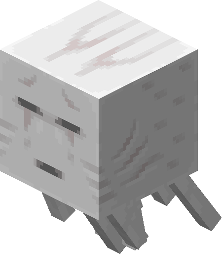

The Wailing Revenant
Soul Sand Valley Boss

| Type | Ghast |
|---|---|
| HP | 40 |
| Attack | 8 |
| Defense | 1 |
| Speed | 1 (teleports) |
| Range | 6 |
| Size | 2×2 |
| Phase 2 | ≤ 50% HP |
| Dimension | Nether |
The Wailing Revenant
Soul Sand Valley biome boss — a specter bound by grief.
The Wailing Revenant drifts through the Soul Sand Valley, raining soul fire and tethering victims to anchor points with spectral chains. It uses Phase Shift to stay out of reach while the arena steadily fills with permanent flames.
Abilities
- Soul Barrage: Fires 3 soul fireballs at scattered tiles near the player, dealing 4 dmg each and leaving soul fire lasting 2 turns. Telegraphed 1 turn in advance.
- Wail of Despair: AoE debuff within 4 tiles — all entities lose –2 ATK for 2 turns.
- Soul Chain: Tethers the player to an anchor point, dealing 2 dmg/turn. The chain breaks if the player moves 5 or more tiles from the anchor.
- Phase Shift: Teleports to the farthest arena corner when the player closes within 3 tiles.
Phase 2 — “Requiem”
Triggers at ≤ 50% HP. Soul Barrage fires 5 fireballs and the soul fire it leaves becomes permanent. Wail of Despair also applies Slowness. The Revenant can maintain 2 active Soul Chains simultaneously. Gains Speed 2.
Strategy
Break the Soul Chain by creating distance, then close in before it Phase Shifts again. High burst damage helps end the fight before the arena fills with permanent soul fire and mobility becomes severely restricted.